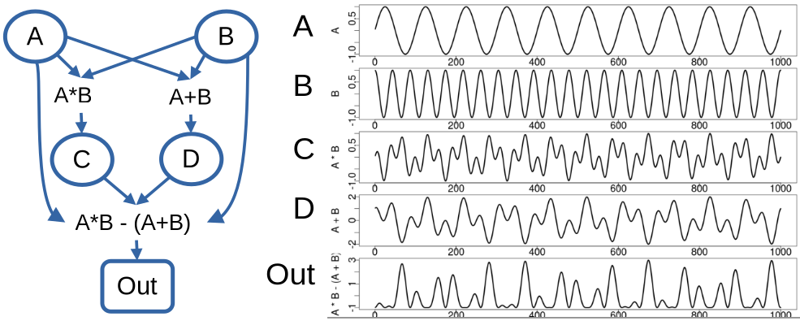
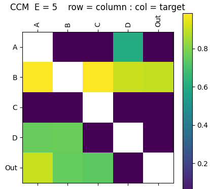
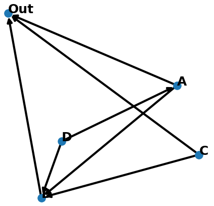

GMN Example
A simple example demonstrates the processing pipeline on a toy data set. The network consists of 5 nodes: A B C D Out. Each node represents a time series of length 1000 points with network structure and time series:

Interaction Matrix
The interaction matrix defines the GMN network created with the InteractionMatrix.py application (see Interaction Matrix). Help can be shown with the -h argument. We create the interaction matrix from data file TestData_ABCD.csv using the EDM convergent cross mapping (CCM) metric, storing the output interaction matrix in ABCD_iMatrix_E5_tau-3_CCM.csv. CCM is passed an embedding dimension of E=5, and time delay of tau=-3.
./apps/InteractionMatrix.py -d ./data/TestData_ABCD.csv -oc ./output/ABCD_iMatrix_E5_tau-3 -ccm -E 5 -t -3 -P

Network Creation
The CreateNetwork.py application (see Create Network) reads the interaction matrix and creates the networkx directed graph object, here stored in a binary file using the python pickle module.
./apps/CreateNetwork.py -i ./output/ABCD_iMatrix_E5_tau-3_CCM.csv -t Out -o ./output/ABCD_Network_E5_tau-3_CCM.pkl -d 4 -P -l spring

Generative Mode
With a GMN network we can run GMN in generative mode according to the parameters specified in a configuration file (see Parameters). [EDM] parameters are defined in EDM Parameters.
Define the configuration file ./network/ABCD_Out.cfg as :
[GMN]
mode = Generate
predictionStart = 700
predictionLength = 300
backend = serial
kernel = True
outPath = ../output
dataOutFile =
showPlot = True
plotType = state
plotColumns = Out A B C D
plotFile =
[Network]
name = ABCD 4 Driver
targetNode = Out
file = ./network/ABCD_Test/ABCD_Network_E3_T0_tau-1_CMI.pkl
data = ./data/TestData_ABCD.csv
[Node]
info = EDM Simplex Manifolds
function = Simplex
[EDM]
E = 7
Tp = 1
tau = -3
validLib =
[Scale]
factor = 1
offset = 0
From the python console import the gmn package, create the GMN object and run the network in generative mode:
import gmn
G = gmn.GMN( configFile = './config/ABCD_Out.cfg' )
G.Generate()
G.DataOut.tail( 5 )
Time A C D B Out
295 996 -0.2487 -0.5018 0.7500 0.985236 -0.979370
296 997 -0.1874 -0.4708 0.7937 0.985842 -0.991504
297 998 -0.1253 -0.4248 0.8177 0.965066 -0.973041
298 999 -0.0628 -0.3671 0.8224 0.923630 -0.931681
299 1000 0.0000 -0.3016 0.8090 0.862222 -0.871642
The output state plot shows the library (observed time series & state-space) in blue, and GMN generated values in orange.